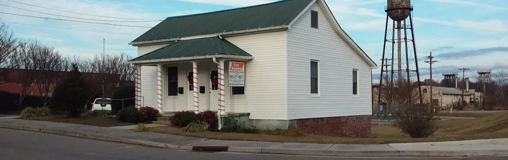

Home of the 100% Satisfaction Guarantee
Termite and pest control from Brad and Karen Gardner. The same technician every visit, shoe covers on in your house, and a 100% money-back guarantee printed right on the contract.
ServingLenoir City, Loudon, Tellico Village, Sweetwater, Philadelphia and Kingston
7 years running.Voted a News-Herald Hometown Favorite, #1 in 2024. In their words: “Thank you to all of our clients who continue to vote for us!”

What are you seeing?
Pick the bug. You’ll land on a short form that tells Karen what it is and where, so the right treatment shows up the first time. Not sure what it is? You can attach a photo.
East Volunteer Termite & Pest Control LLCPrinted on every contract
30 Day Risk Free Money-Back Guarantee
We guarantee that we will eliminate your current pest problem within 30 days from the first treatment. If we do not, we will provide additional treatments FREE OF CHARGE until you are satisfied, or we will gladly cancel this agreement and refund 100% of your money.
From their guarantee page: “We are proud of our guarantee and don’t try to hide it in small print…”
Termite treatments carry their own guarantee: live termites in the first year, they re-treat free, and it transfers to the new owner if you sell. How termite protection works
How a quarterly visit goes
Their most popular plan. Every three months, inside and out, about an hour to an hour and a half depending on the size of the house.
- They call first.Nobody shows up unannounced. You pick a time that works.
- Same technician, every time.One tech is assigned to your account, and that’s the only one you’ll see.
- Shoe covers inside.They start inside, then move outside, so you don’t have to be home the whole time.
- Webs and wasp nests knocked down.Every visit, outside. Ants and ant hills are guaranteed gone.
- A written report.What they found and what they did about it, before they leave.
Quarterly plans start at $85, treating and pest proofing the inside and outside of your home.
Want monthly, exterior only, or a one-time treatment for fleas or lady bugs? All the plans
What neighbors say
“We had someone come out to see if we had termites after finding a few dead in our sunroom. First, the woman on the phone was extremely kind and patient and we were able to send a photo to ID the bug before making an appointment, which was convenient. … And we were charged nothing at all for the visit.”
“We live in the middle of the woods so its an uphill battle. We have added services for mosquitos and ticks and man what a difference it has made. … It was such a nice experience I called the main office to brag on him.”
“Great folks. In demand, so be prepared to wait… worth it. Friendly and through. Came back the next day to be sure the job was a success.”
“Very happy with my service. The office explained the process in detail. All of my pest issues were taken care of.”
Brad and Karen
Brad grew up in his family’s pest control business in Cleveland, Tennessee, and brought that to Loudon and Lenoir City. Karen runs the office: the calls, the scheduling, the safety program. Before pest control she was a safety manager at a chemical manufacturer and wrote chemical safety data sheets.
They do very little advertising. Most new customers come from current ones telling family and friends.
We’re hiring
Pest control technician. Experience not required. Truck, training and equipment provided.
$40,000 to $55,000
DetailsTermite inspections are free
If they find termites or damage, they take pictures so you see the proof yourself. Nobody tells you that you have termites without showing you.